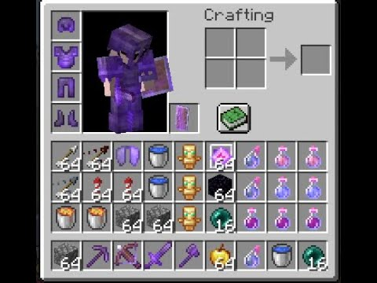
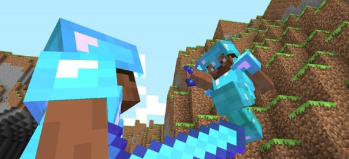

PvP, or Player vs. Player combat, involves players battling each other in Minecraft multiplayer. Whether in team
battles or one on one duels, mastering PvP requires skill and practice. The basic mechanics are straightforward: one
player attacks another until the target's health is depleted, the attacker is defeated, or someone escapes.


New Features
New game updates bring fresh strategies, but foundational skills remain valuable. Features like enchanting tables
and netherite gear enhance PvP capabilities. For instance, critical hits (crits) occur when you jump and strike
while falling, dealing extra damage and knockback. To achieve consistent crits, jump and attack as you descend,
avoiding sprinting mid air. Timing your attacks for maximum impact and allowing your weapon to recharge between
swings are also crucial for success.
Combos
Combos involve chaining attacks to overwhelm opponents. Effective combos often use knockback, with swords being
ideal due to their balance of damage and knockback. Aim to hit your opponent into a trajectory for follow-up
attacks, using moves that stun and keep opponents close to sustain combos.
Types of Combat Tools
Various tools enhance PvP performance and are split into different categories. Ranged weapons like bows and
crossbows offer safe distance attacks but deal less damage. Melee weapons, including swords and axes, provide quick
damage and effective combos. Axes deal more damage, while swords offer better knockback. Enchantments like fire
aspect, sharpness, unbreaking, mending, and looting further enhance these weapons.
Defensive items, such as shields, block attacks, while the totem of undying grants an extra life. These items are
typically held in the offhand slot. Potions, though less commonly used, offer buffs (strength, speed) or inflict
debuffs (weakness, poison) on opponents. Explosive PvP is popular, with items like beds, end crystals, respawn
anchors, and TNT minecarts dealing massive damage or instant kills.
PvP Servers
Trusted PvP servers include Hypixel, PvP Legacy, Foxcraft, PvP Land, and Manacube. These communities provide
platforms for honing your skills and joining a broader PvP community, offering various game modes and arenas to
practice and improve your combat abilities.